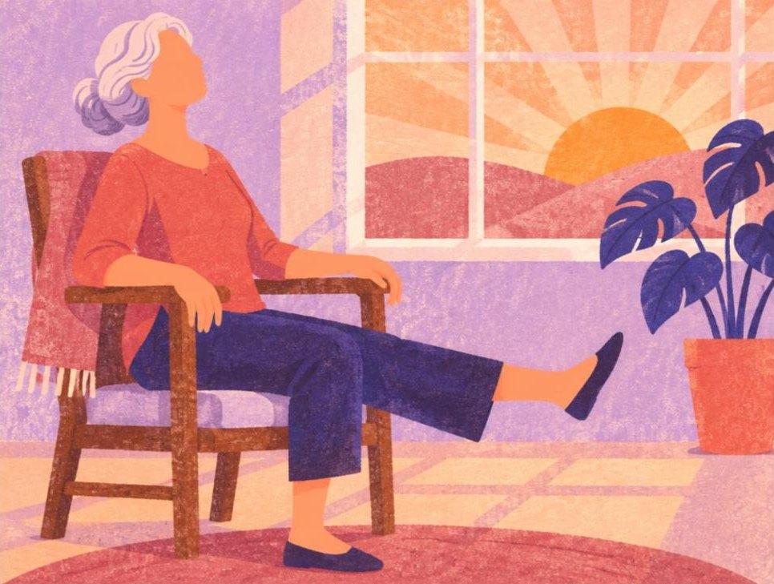

Slow Sunrise · Issue one
Rise slowly. Move freely.
Explainers, evidence reviews, routines and field guides for achy joints and the families around them. Every claim links to its source.
Mornings
Arthritis and morning stiffness: why you wake up stiff, and the 30 minutes that ease it
What happens to joints overnight, and a minute-by-minute plan for waking up.
More articles

MovementSix chair exercises for arthritis. No gym, no floor, no fuss.
How to start moving when everything aches, with the CDC's advice.
 Remedies
RemediesCastor oil packs for arthritis: an old remedy, and what the research really says
Step by step, who should skip it, and an honest look at the research.
 Caregivers
CaregiversWhen Mom has arthritis: a field guide for grown children
Simple ways to make their days easier, and to look after yourself.